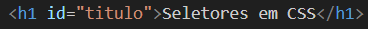
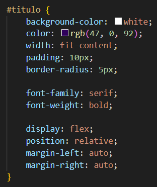
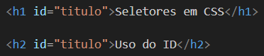
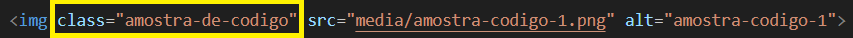
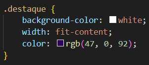
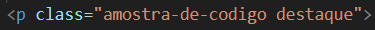

Seletores em CSS
Uso do ID
O ID é um seletor de estilo usado no CSS, a característica principal dele é ser único, ou seja, apenas UM elemento terá essa configuração de estilo, não podendo ser copiada.
Ele é indicado na página de estilo por #nome-do-id {}.
Aplicação na tag:
Configuração de estilo:
Exemplo de mau uso do seletor ID:
Nesse exemplo o seletor ID foi usado em mais de uma tag, afim de duplicar seu estilo. Porém, essa é uma prática inadequada. Para essa função, deve-se criar um seletor class="#".
Uso do Class
Class também é um seletor de estilo CSS, porém é mais versátil em sua função, podendo ser usado em quantas tags você quiser.
Ele é indicado na página de estilo por .nome-da-class {}.
Aplicação na tag:
Configuração de estilo:
Uma tag pode ter mais de uma class, combinando os estilos compatíveis:
Para adicionar uma classe extra a sua tag, basta adiciona-la entre as aspas, separando as classes por espaços (Não se usam vírgulas).